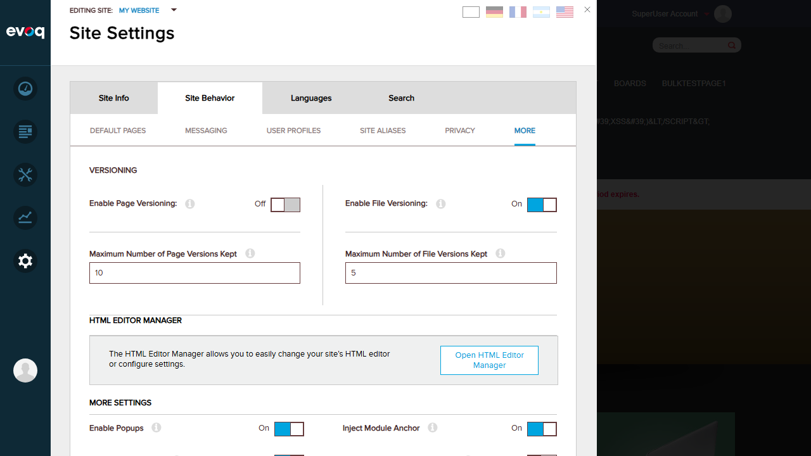
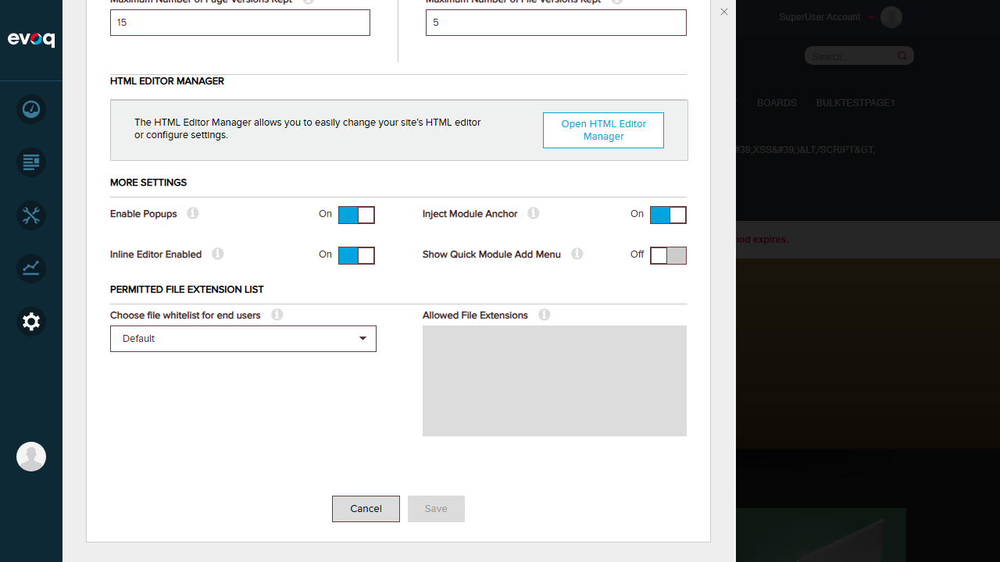
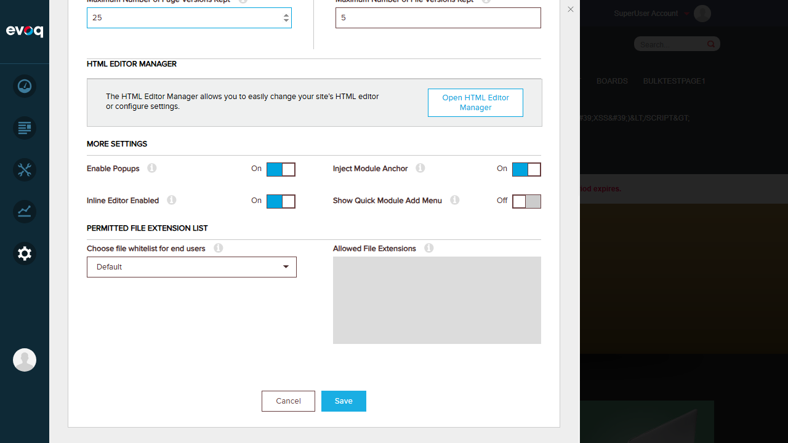
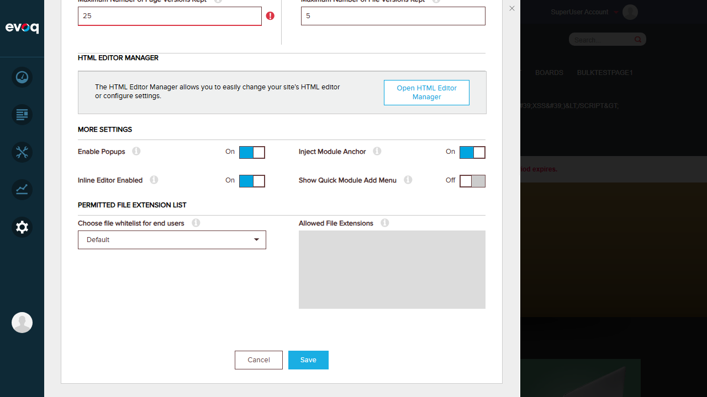
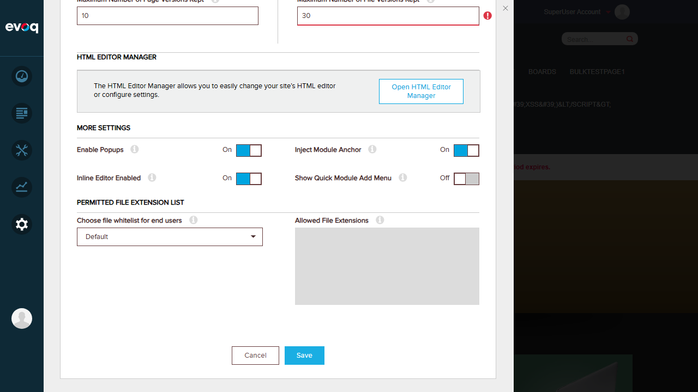
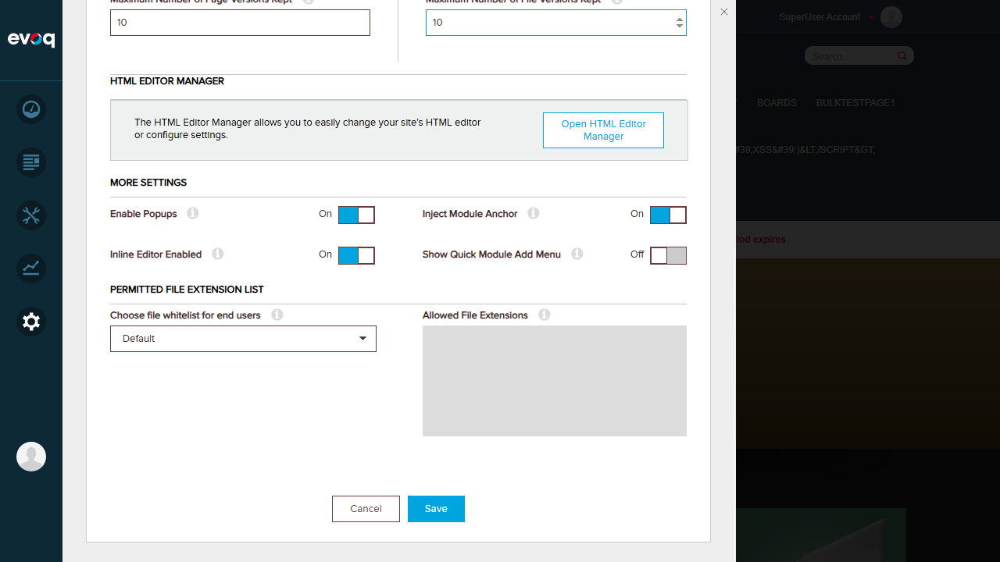
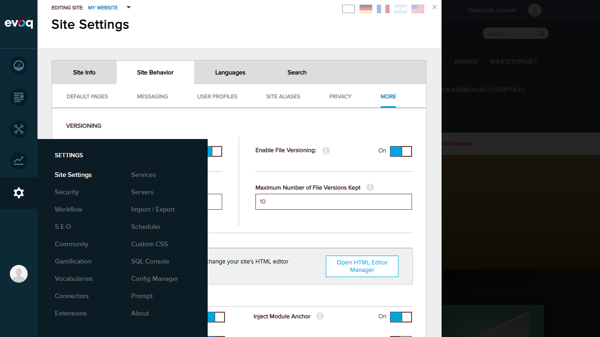

Test Report: Page and File Versioning Configuration
Feature Information
| Property | Value |
|---|
| Extension | Evoq.PersonaBar.SiteSettings |
| Feature Name | Page and File Versioning Configuration |
| Priority | High |
| UI Location | Admin > Settings > Site Settings > Site Behavior > More > Versioning |
| Description | Manages version control settings for both pages and files, allowing administrators to enable/disable versioning and set maximum version limits |
Validation Rules (from code review)
- Page Versions: Valid range is 1-20
- File Versions: Valid range is 5-25
Test Results
Test 1: Disable Page Versioning
PASS
Steps:
- Navigate to Settings > Site Settings > Site Behavior > More
- Locate the Versioning section
- Toggle "Enable Page Versioning" to Off
- Click Save
- Verify success message appears
Result: Page versioning was successfully disabled and saved.


Test 2: Enable Page Versioning
PASS
Steps:
- Toggle "Enable Page Versioning" to On
- Click Save
- Verify success message appears
Result: Page versioning was successfully enabled and saved.
Test 3: Set Maximum Page Versions Within Valid Range (1-20)
PASS
Steps:
- Set "Maximum Number of Page Versions Kept" to 15
- Click Save
- Verify value is accepted and saved
Result: Value of 15 (within valid range 1-20) was accepted and saved successfully.

Test 4: Set Page Versions Outside Valid Range - Validation Error
PASS
Steps:
- Set "Maximum Number of Page Versions Kept" to 25 (outside valid range 1-20)
- Attempt to save
- Verify validation error indicator appears
Result: Value of 25 (outside valid range 1-20) correctly triggered a validation error. A red error indicator appeared next to the input field.


Test 5: Disable File Versioning
PASS
Steps:
- First reset page versions to valid value (10)
- Toggle "Enable File Versioning" to Off
- Click Save
- Verify success message appears
Result: File versioning was successfully disabled and saved.

Test 6: Enable File Versioning
PASS
Steps:
- Toggle "Enable File Versioning" to On
- Click Save
- Verify success message appears
Result: File versioning was successfully enabled and saved.

Test 7: Set Maximum File Versions Within Valid Range (5-25)
PASS
Steps:
- Set "Maximum Number of File Versions Kept" to 20
- Click Save
- Verify value is accepted and saved
Result: Value of 20 (within valid range 5-25) was accepted and saved successfully.
Test 8: Set File Versions Outside Valid Range - Validation Error
PASS
Steps:
- Set "Maximum Number of File Versions Kept" to 30 (outside valid range 5-25)
- Attempt to save
- Verify validation error indicator appears
Result: Value of 30 (outside valid range 5-25) correctly triggered a validation error. A red error indicator appeared next to the input field.

Test 9: Verify Changes Persist After Page Refresh
PASS
Steps:
- Set both page and file versions to valid values (10 each)
- Enable both page and file versioning
- Click Save
- Refresh the page
- Navigate back to Versioning settings
- Verify all values are retained
Result: All settings were retained after page refresh. Both versioning toggles remained On, and maximum version values remained at 10.


Test Results Summary
| Test # |
Test Name |
Status |
| 1 |
Disable Page Versioning |
PASS |
| 2 |
Enable Page Versioning |
PASS |
| 3 |
Set Max Page Versions (Valid Range 1-20) |
PASS |
| 4 |
Page Versions Outside Valid Range - Validation Error |
PASS |
| 5 |
Disable File Versioning |
PASS |
| 6 |
Enable File Versioning |
PASS |
| 7 |
Set Max File Versions (Valid Range 5-25) |
PASS |
| 8 |
File Versions Outside Valid Range - Validation Error |
PASS |
| 9 |
Verify Changes Persist After Refresh |
PASS |
Observations
- Multi-Portal Testing: The test scenario "Test with different portal IDs in multi-portal setup" was not tested as the environment appears to have only a single portal configured. This would require additional portal setup to test.
- Validation Behavior: The validation errors display as a red indicator icon next to the input field when values are outside the valid range. The error is shown after attempting to save (when triedToSave flag is true).
- UI Location: The Versioning settings are found at Settings > Site Settings > Site Behavior > More (not directly under a "Versioning" tab as initially expected).
Test Environment
| Website URL | http://localhost:8081 |
| User | host (SuperUser) |
| Test Date | January 6, 2026 |
| Browser | Chromium (via Playwright) |
Login Verification
Login as host user was verified before testing: